The problem
Networking at creative events — gallery openings, design conferences, graduate shows — tends to follow a familiar, slightly uncomfortable script: small talk, a fumbled business card, a promise to follow up that rarely happens. The card gets lost. The connection doesn't form.
For designers, whose work lives in digital portfolios and social profiles, handing over a rectangle of card stock feels like the worst possible representation of who they are.
The idea
Tap & Know is a wearable smart pin that replaces that exchange with something more honest to how creatives actually exist online. You wear it. Someone gets curious. They take the detachable piece, tap it to their phone, and your portfolio — or any link you've set — opens instantly. No app, no QR code, no friction.
The pin form was a deliberate choice. It sits at chest height — in the natural field of view during a conversation. It has a long cultural history as a marker of identity and affiliation, so the object carries meaning before anyone understands what it does. And the key constraint we set early: the wearer has to be able to hand something physical to the receiver. The act of passing an object — even a small one — changes the social register of the interaction.
My role
Tools
- Rhino 8
- 3D Printer (PLA filament)
- NFC tag
The process
We started with sketches and form studies — exploring how a wearable could signal identity without screaming for attention. Different shapes for different personalities: geometric, organic, angular, rounded.
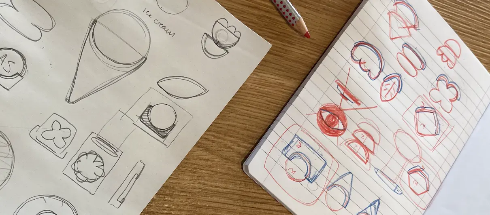
We then modelled the pin in Rhino 8, iterating through multiple shape families. The two-part structure — a fixed base that attaches to clothing and a detachable component with the embedded technology — was resolved early and stayed consistent across all shape variants.
Prototypes were 3D printed in PLA. The material's slight rigidity meant the detachable piece had a satisfying physical resistance when removed and replaced — which turned out to matter more than we expected. The tactile quality of the handoff is part of what makes the interaction feel intentional rather than incidental.
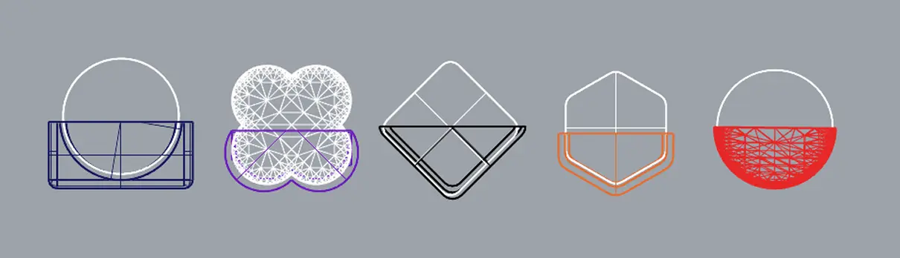
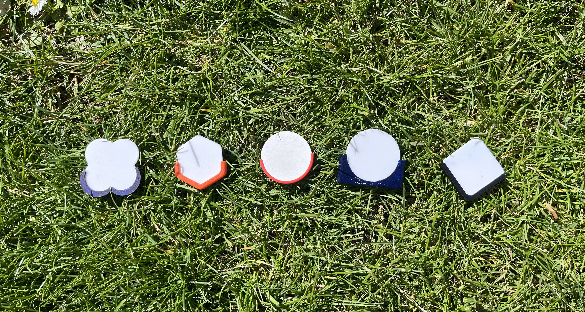
The outcome
The full interaction sequence was designed to feel effortless for both people involved — the wearer and the person they're sharing with.
Step 01
Set your link
Portfolio, Linktree, LinkedIn — any URL. Takes under a minute, no app needed.
Step 02
Wear it
Attach the pin to your outfit. The object does the work of starting the conversation — curiosity is built into the form.
Step 03
Hand it over
Detach the piece and pass it. They tap it to the back of their phone — your link opens instantly.
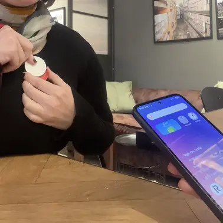
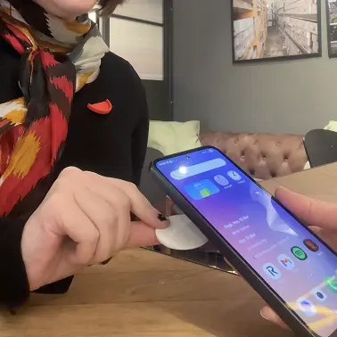
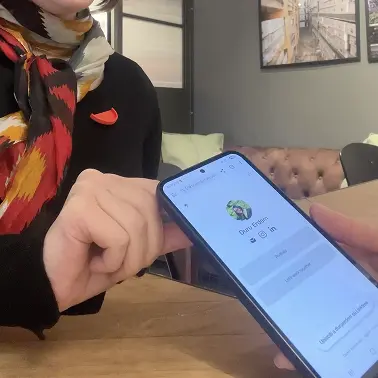
The final set is five shapes, each available in multiple colourways. A single generic design would have made the object feel like a product, where the wearer is a customer. Different shapes for different personalities makes it feel like a choice — you pick the one that fits how you want to present yourself, which is exactly what a networking tool should ask you to do.
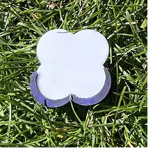
Shape 01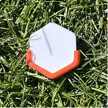
Shape 02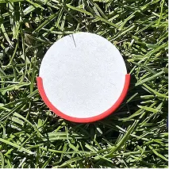
Shape 03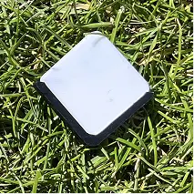
Shape 04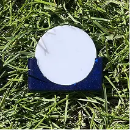
Shape 05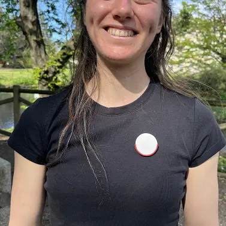
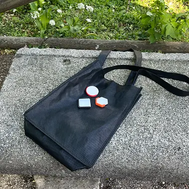
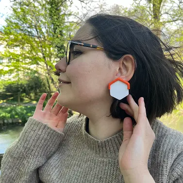
Reflection
The main challenge was conceptual: designing something that works as both a functional tool and a conversation object. A pin that simply transmitted a link without considered form or interaction would have been technically sufficient but socially inert — no one would notice it, no curiosity would form, no interaction would happen. The object had to earn the interaction before the interaction could work.
What this project taught me is that physical interactions have a texture that digital ones don't. The small resistance of detaching the piece, the weight of it in your hand, the gesture of passing it to another person — these aren't decorative details. They're what makes the exchange feel like something that actually happened, rather than a data transfer that could have been an email.